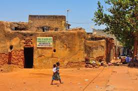

Historique de la Maison Mere ou Konsa
Le village de Sya ou Dioulassoba est le noyau originel de la ville de Bobo-Dioulasso à l'ouest du Burkina Faso.Sya est situé au coeur de la ville de Bobo-Dioulasso,dans l'arrondissement de Konsa,a l'intérieur de la fourche formée par le marigot Houet a l'Est et le Sanyo a l'ouest.Sya est composé de trois villages ,Kibidoué et Tiguisso qui se disputent l'origine de Sya ainsi que le village bobo-dioula.Ces trois villages ont donné naissance a dix huit(18)foyers,dont 04 à Konsa,06 à Tiguisso et 08 à Kibidoué.ces villages ont chacune une maison mère qui est celle du fondateur ou encore l'aîné du lingnage.
Description de la Maison Mere ou Konsa
La vieille ville de Dioulassoba comprend les quartiers Kibidoué,Donoma et Tougousso.La maison mère ou Konsa date du XVe siècle. Elle se situe dans le quartier Dioulassoba de Bobo-Dioulassoba. Son accès est facile. C’est le plus ancien quartier traditionnel. Les maisons sont construites en banco. .